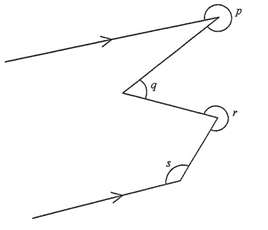

平行線 · 角 · 1 分題
此題原卷附有圖形；題目中已列出全部數據，可按文字自行繪圖。其餘年份同一題的圖形可在原試卷查閱。

在 $q$ 及 $r$ 的頂點分別作平行線，便可把折線角化為同旁內角（互補，和為 $180^{\circ}$）。
$p$ 與 $r$ 皆為反角（大於 $180^{\circ}$），處理時寫成 $360^{\circ}-p$、$360^{\circ}-r$，再用同旁內角相加。
由兩組同旁內角相加得 $p+q+r-s=540^{\circ}$，故選 D。